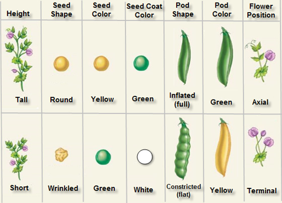
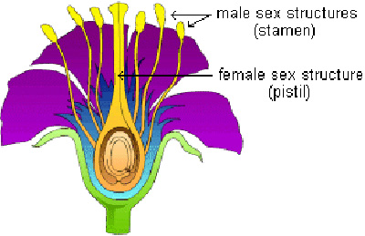
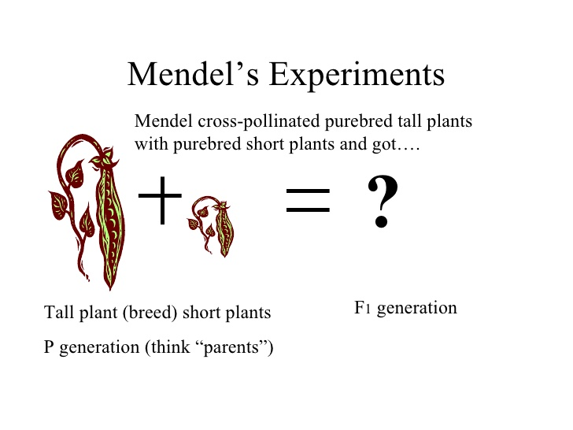
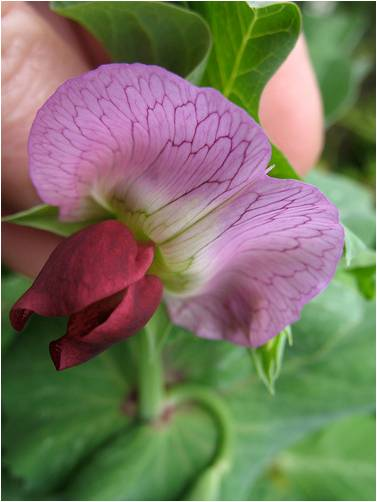
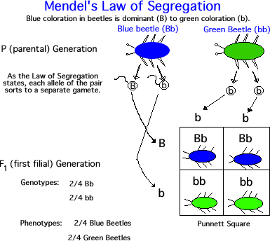
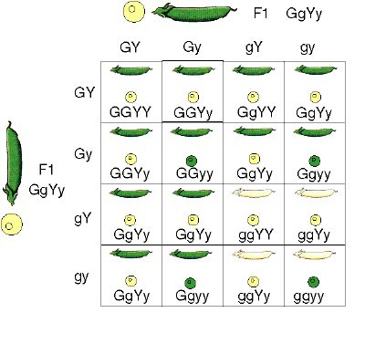
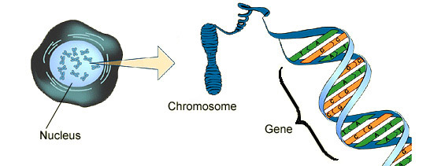
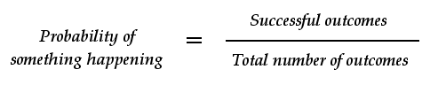

Common Errors and Comments
Section 1.04: August 9, 2017
Objectives
- Identify three different types of programming errors
- Create simple programs using comments and style
- List and Apply the steps neccessary for avoiding syntax errors

What Mendel Observed in the Garden
Mendel observed 7 characteristics of his pea plants. Each characteristic occurred in 2 contrasting traits: plant height (long or short stems), flower position along stem (axial or terminal), pod color (green or yellow), pod appearance (inflated or constricted), seed texture (smooth or wrinkled), seed color (yellow or green), and flower color (purple or white). Mendel used his knowledge of statistics to analyze his observations of those 7 characteristics.

Mendel's Methods

Mendel documented the physical characteristics of, and collected the seeds from his pea plants. During the next planting season he planted the seeds. As the new plants grew, Mendel noticed that purple flowering plants grew from the seeds he collected from the plants that had purple flowers. He also noticed that some of the seeds, from purple flowering plants, produced plants with white flowers. Mendel also noticed that other characteristics were mixed as well. For example, seeds collected from tall plants produced both tall and short offspring. He possibly said, "Thats weird", then set off to discover what caused such unexpected results.
Mendel was able to document the traits of each generation's parents by carefully controlling how the pea plants were pollinated. Pollination occurs when pollen grains, produced in the male reproductive parts of the flower called the anthers, are transferred to the female reproductive part of a flower, called the stigma. Self pollination occurs when pollen is transferred from the anthers of a flower to the stigma of either the same flower or a flower on the same plant. Cross-pollination involves flowers of two separate plants. Pea plants normally reproduce through self pollination. Self pollination can be interrupted, and cross pollination performed, by removing the anthers from a flower and manually transferring the anthers of a flower on one planet to the stigma of a flower on the other plant. Mendel used this method to ensure that pollination occurred as he intended.
Mendel's Experiments

Mendel studied each characteristic and contrasting traits individually. He began by growing plants that were pure for each trait. Plants that are pure for a trait always produce offspring with that trait. For example, the plants that were pure for yellow seed pods, self pollinate to produce offspring with yellow pods. The term strain refers plants that are pure for a specific trait. Mendel produced strains by allowing the plants to self pollinate for several generations. He eventually obtained fourteen strains, one for each of the fourteen traits he observed. He called each strain a parental generation or P1 generation.
Mendel then cross pollinated these strains by transferring pollen from the anthers of a plant pure for one trait to the stigma of another plant pure for the contrasting trait. For example, to cross pollinate a plant that was pure for the yellow seed pods with one pure for green seed pods, he would first remove the anthers from the plant that produced green pods. Then he dusted the pollen from a yellow podded plant onto the stigma of a green podded plant and allowed the seeds to develop.
When the plants matured, he recorded the number of each type of offspring produced by each P1 plant. Mendel called the offspring of the P1 generation the 1st filial generation, or F1 generation. He then allowed the flowers from the F1 generation to self pollinate and collected the seeds middle called the plants in this generation the 2nd filial generation, or F2 generation. Following this process, Mendel performed hundreds of crosses and documented the results of each by counting and recording the observed traits produced by each cross.
What Mendel Discovered

During one of the experiments, Mendel crossed a plant pure for green pods with one pure for yellow pods. The resulting seeds produced an F1 generation consisting of plants plants with only green seed pods. Even though one parent had been pure for yellow pods, none of the offspring produced yellow seed pods. Only one of the two traits found in the P1 generation appeared in the F1 generation. Next, Mendel allowed the F1 plants to self pollinate and planted the resulting seeds. When the F2 generation plants grew, he observed that about 3/4 of the F2 plants had green pods and about 1/4 had yellow pods. These observations led Mendel to hypothesize that something within the pea plants controled the offspring's phaysical characteristics. He called these unknown mechanisms Factors. Mendel thought that each trait was inherited by means of a separate factor. Because the characteristics he studied had to alternative forms, he reasoned that there must be a pair of factors controlling each trait.
Recessive and dominant traits
Whenever Mendel crossed strains, one of the P1 traits failed to appear in the F1 plants. In every case, that triat reappeared in a ratio of about 3:1 in the F2 generation. This pattern emerged in thousands of crosses and led Mendel to conclude that one factor, in a pair, may subordinate the other factor. Mendel hypothesized that the trait appearing in the F1 generation was controlled by a dominant factor because it masked or dominated the other factor for a given characteristic. The trait did not appear in the F1 generation but reappeared in the F2 generation was thought to be controlled by a recessive factor.
Thus, a trait controlled by a recessive factor had no observable effect on an organisms appearance when it was paired with a trait control led by dominant factor. Think of it another way. A high school football team has two quarterbacks. Only one QB can play at a time. The best QB, dominant QB, gets to play while the not quite so good, recessinve QB, sits on the sidelines only playing when the team needs someone to hold the ball for the kicker.
The law of segregation

Mendel concluded that the paired factors separate during the formation of reproductive cells. This means that each reproductive cell, or gamete, receives only one factor of each pair. When two gametes combine during fertilization, the offspring have two factors controlling for a specific trait. The law of segregation states that a pair of factors is segregated, or separated, during the formation of gametes.
Law of Independent Assortment

Mendel also conducted test crosses with multiple characteristics, such as flower color and seed color. These crosses were much more difficult to control, however, the results showed that the traits produced by dominant factors did not necessarily appear together. A green seed pod produced by a dominant factor could appear in a white flowering pea plant. Mendel concluded that the factors for different characteristics are not connected. The law of independent assortment states that factors for different characteristics are distributed to gametes independently.
Chromosomes and Genes

Most of Mendel's findings agree with what scientists now know about genetics. Genetics, or molecular genetics, is the study of the structure and function of chromosomes and genes. You may recall, from Freshman biology, that a chromosome is a threadlike structure made up of DNA. A gene is the segment of DNA on a chromosome that controls a particular hereditary trait. Because chromosomes occur in pairs, genes also occur in pairs. Each of several alternative forms of a gene is called an allele. What Mendel called factors are now referred to as alleles.
Alleles are represented by capital and lower-case letters. Capital letters refer to dominant alleles and lowercase letters refer to recessive alleles. For example, the dominant allele for the trait of green pod color may be represented by (G), and the recessive allele for the trait of yellow pod color may be represented by (g). Whether a letter is capitalized or lowercase is important. The actual letter selected to represent an allele is not important.
During meiosis, gametes receive one chromosome from each homologous pair of chromosomes. Homologous structures are those that have the same underlying structure but have different funcitons. This means that when the gametes combine in fertilization the offspring receives one allele for a green trait from each parent.
Mendel's law of independent assortment is supported by the fact that chromosomes segregated independently to gametes during meiosis. Therefore, the law of independent assortment is observed only for genes located on separate chromosomes or located far apart on the same chromosome.
Probability

WHAT???? I have to know math too?
Think of Probability as the likelhood that something will happen such as the Cardinals winning the Super Bowl. Probabilities may be expressed as a percent, decimal or fraction. You are probably most familiar with the percent and fractional forms. For example, you might have heard that there is a .003% that you will be struck by lightning in your life time. To express the same thing another way you could say that you have a 1 in 3,000 chance of being struck... Well you get it.
The equation for calculating a probability is: Probability = the number of times something is expected to happen / the number of opportunities for it to happen.
Let's take Mendel's experiments as an example. In Mendel's experiments, the dominant trait of yellow seed color appeared 6,022 times in the F2 generations. the recessive trait of green seed color only appeared 2,001 times. The total number of offspring were 8,023. the probablility of the dominant factor being expressed is 6,022 / 8,023 or 0.75. You would then say that there is a 0.75 probability that the dominant trait would be expressed, or, a 75% probability. What about the recessinve trait? Well I'm glad you asked! If you want to know what the probability is of seeing the recessive trait being expressed do the following: 2,001 / 8,023. As you calculated, there is a .25, or 25%, probability that the recessive trait will be expressed. Got it? Good. If not, go to Math is fun where you can learn more about it. Or better yet.... Go ask your MATH teacher. That is what they get paid for.